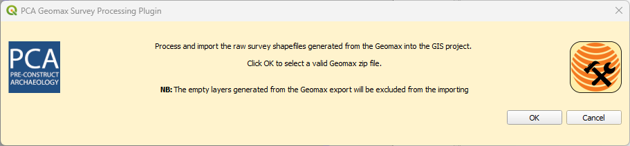

PCA Geomax Survey Processing is an internal QGIS Plugin specifically built for PCA survey data management and processing purposes. It is a component of the new DRS/GIS integrated data management system, and it is based both on the new Geomax codelist system and on the raw survey data exported in shapefile format.
The plugin consists of four tools contained in a dedicated toolbar:
-
 A tool to process and import the raw survey shapefiles generated from the Geomax into the GIS project.
A tool to process and import the raw survey shapefiles generated from the Geomax into the GIS project. -
 A tool to copy and paste all the new data from the survey processed layers to the corresponding GIS layers.
A tool to copy and paste all the new data from the survey processed layers to the corresponding GIS layers. -
 A tool to automatically update the DRS databases from an external CSV file.
A tool to automatically update the DRS databases from an external CSV file. -
 A tool to create a backup copy of the active Geopackage.
A tool to create a backup copy of the active Geopackage.
Correct data storage and management is a prerequisite for the use of the plugin. Consistency on file and folder naming and location will allow you to use all the available tools. Here is described the procedure step by step.
Step 1
1.1 - From the cloud, download the zip file containing the raw survey data exported in shapefile format from Geomax.

1.2 - On the project folder, navigate to …Project Data\04_Survey\Dated folders for processing\.
Here copy and paste the template folder SITECODE_YEARMONTHDAY and rename it according to the required format.
NB. If the site code has a special character in his name (e.g., \, / or -) or a space, avoid those characters replacing them with an underscore ‘_’ or use the site name instead. The special character can generate an error in the plugin processing.
1.3 - Copy the zip file in the subfolder ...raw data\SHP\.
Step 2
Open the QGIS site plan project and run the tool  .
.
After an opening dialogue that describes what this tool do

By pressing OK, an Explorer window will open. Navigate to the folder containing the imported zip. ( e.g., …\Project Data\04_Survey\Dated folders for processing\raw data\SHP\SDFSF22_20220728\SDFSF22_20220728_SHP)
The tool will generate automatically:
a) a new subfolder in your daily parent folder called `Processed_shapefiles` that contains a processed copy of the raw shapefiles (Coordinates Reference System corrected to EPSG:27700, field name formatted to respect the QGIS Template)

b) a new group in the QGIS project called `survey_data_temp_JOB NAME` where JOB NAME is the job name retrieved from the zip file name.

This group will contain the processed shapefiles ready to be used in the QGIS project for data processing. If one or more empty layers were generated from the Geomax, they will be excluded from the importing.
A message will confirm the success of the operation, providing also a list of the excluded layers.

Errors and exceptions
If the selected folder doesn’t contain any shapefile an error message will appear:

If the plugin is reused on the same raw shapefile folder, it will rise a warning message:

The message informs that the ‘Processed folder’ for this job file already exists and that the use of the tool will overwrite it, deleting also possible edits done on the processed layers. If ‘Yes’ is selected, an Explorer window will automatically open at the folder address, to consent the user to manually delete the folder before re-run the plugin.
Step 3
Run the tool  from the PCA Geomax Survey Processing plugin.
from the PCA Geomax Survey Processing plugin.
After an opening dialogue that describes what this tool do
this tool will copy and paste all the data from the survey processed layers into the corresponding GIS layers (e.g., from Polygon_INTERVENTION_PLY_processed' and Lines_INTERVENTION_PLY_processed'to 'Interventions', from 'Lines_SECTION_LN_processed' to 'Sections' and from 'Points_LEVELS_PT_processed' to 'Levels').
After being successfully copied, the survey processed layer is removed from the TOC. A message will confirm the success of the operation, providing also a list of the copied layers.

Not all the layers will be copied because some of them do have not a corresponding GIS layer. For example, while in QGIS Archaeological Features, Modern, Layers, etc.… are recorded as polygons, on site are surveyed as lines. This will generate some linear processed layers without any correspondence with the GIS layers. These layers will stay available in the project as background data for helping during the digitizing of the features.
If no matching layers were found, the tool will return a different message.

Step 4
Since the live version of the DRS databases are contained into the main geopackage, a dedicated tool  to help the update of the spreadsheets is available in the toolbar.
to help the update of the spreadsheets is available in the toolbar.
Running the tool will open a dialogue box where is possible to select which DRS database (DRS_COntext_Database for the Context list or DRS_Trench_Database for the Trench Sheet database) is going to be updated:
Both buttons will open a similar dialogue where the desired DRS spreadsheet is preselected in the dropdown dedicated list.
On the dialogue is possible to select:
-
a. the active DRS database from the GIS layer list that will be overwritten.
b. an external .CSV file containing the update version of the cloud DRS Spreadsheet (usually downloaded from the DRS Google Cloud). To select the file, press and, on the Explorer window, navigate to the location of the selected file.
A message will confirm the success of the operation.

Step 5
After completing all the digitizing and the required plan corrections, is a good practice to create a backup copy of the main geopackage.
To help in the process, the plugin offers a dedicated tool  .
.
To use it, just select any of the GIS layers from the Layer panel. The tool will generate automatically a new backup copy of the active geopackage, renamed using the format ‘DATE_TIME_geopackagename’, in the folder ……\Project Data\03_GIS_Projects\03_GIS_Site_Plan\_Geopackage_Backup.
A message will confirm the success of the operation.